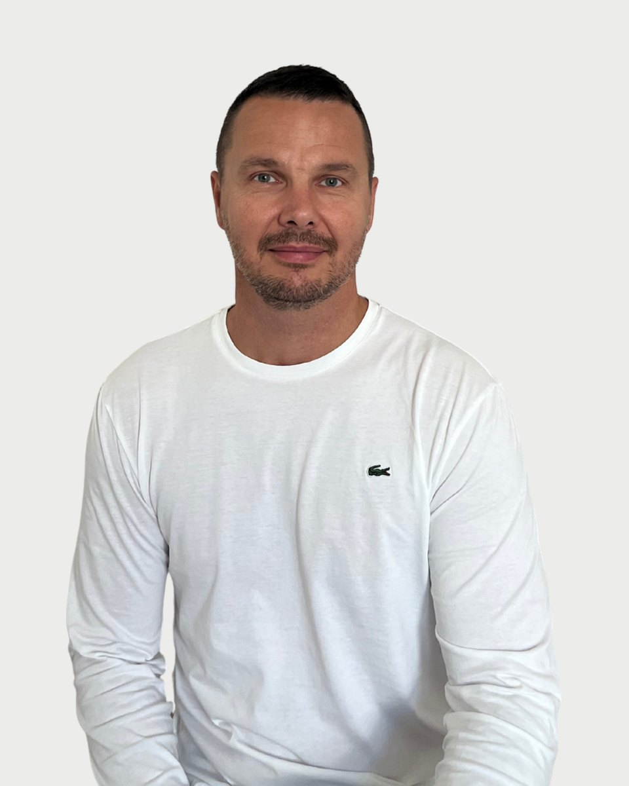

Regiszter 23 · Pszichológus
Marozsi Zoltán
Amikor nem tudod, mi lesz, akkor kezdesz el élni.Hamvas Béla
- Amiben segít
- Életvezetési nehézségek, elakadások
- Szorongásos zavarok és stresszkezelés
Amiben segítek
Marozsi Zoltán saját megfogalmazásában. Ha a listában nem találja a saját helyzetét, az első beszélgetésen ezt is megbeszélik.
- Életvezetési nehézségek, elakadások
- Szorongásos zavarok és stresszkezelés
- Önismereti kérdések
- Önértékelés és önbizalom fejlesztése
- Hangulati állapot javítása, érzések kezelése
- Kapunyitási krízis
- Párkapcsolati elakadások
- Motiváció és célkitűzés
Bemutatkozás
Marozsi Zoltán saját szavaival. Egy alkalom díja 15-20 ezer forint. A díjakról
Minden ember életében eljön az a pont, amikor szükség van arra, hogy megértsük belső működéseinket, és képesek legyünk a megfelelő megküzdési stratégiák kialakítására.
A pszichológiai intervenciók során elsődleges célom, hogy klienseimet támogassam intrapszichikus folyamataik tudatosításában, valamint a maladaptív viselkedésminták és kognitív struktúrák átdolgozásában. Ezzel kívánom elősegíteni a személyes reziliencia és a mentális egészség fenntartását, valamint a holisztikus jólét kialakítását. Hiszek az élethosszig tartó tanulásban és a folyamatos önfejlesztésben, mert számomra ezek azok az eszközök, amelyekkel nemcsak másoknak, de önmagunknak is képesek vagyunk segíteni a mindennapi élet kihívásaiban.
Szakmai háttér
A munkám során előszeretettel alkalmazok kognitív viselkedésterápiás (CBT) módszereket, amelyek hatékonyan segítenek a negatív gondolati minták megváltoztatásában és a belső egyensúly helyreállításában.
Meggyőződésem, hogy minden egyén rendelkezik a belső harmónia és a pszichés jólét eléréséhez szükséges erőforrásokkal, amelyek megfelelő pszichológiai támogatás mellett felszínre hozhatók és mobilizálhatók. Terápiás tevékenységem során törekszem olyan empatikus és ítélkezésmentes környezet kialakítására, amely lehetővé teszi klienseim számára, hogy mélyrehatóan megismerjék önmagukat, és hatékony megküzdési mechanizmusokat fejlesszenek ki.
Hitvallás
Képzés és szakmai út
12 tétel. A képzések és a szupervízió az akkreditált szakképzőhely rendjében folynak. Mit jelent ez Önnek
Végzettség, szakképzettség
Szakmai tapasztalat
Tanítómesterek
- Daubner Eszterklinikai szakpszichológus, pszichoterapeuta
- Kőváry Zoltánfelnőtt klinikai és mentálhigiénés szakpszichológus, egzisztenciális szemléletű tanácsadó
- Czenner Zsuzsannaigazságügyi klinikai- és mentálhigiénés felnőtt- és gyermek szakpszichológus szakértő, egyetemi docens
- Kitanics Márkigazságügyi pszichológus szakértő
- Simon Viktóriapszichiáter, pszichoterapeuta, sématerapeuta sémaszupervizor
Rólam mondták
Kliensek visszajelzései, a hozzájárulásukkal, névtelenül.
Elősegíti az önismeret fejlődését és segít abban, hogy magabiztosabban kezeljem a problémáimat.
Segített abban, hogy reálisabb perspektívából nézzem a problémáimat és ne ragadjak bele a negatív gondolatokba.
A munkám során bátorított, hogy szembenézzek a kihívásokkal, és támogató környezetet teremtett számomra.
Regiszter 23
Időpont Marozsi Zoltánnál
Az ügyfélszolgálat hétköznap 9 és 15 óra között egyeztet. Ha bizonytalan, hogy Ön kihez tartozik, azt is megbeszélik, és ha kell, más kollégát javasolnak.